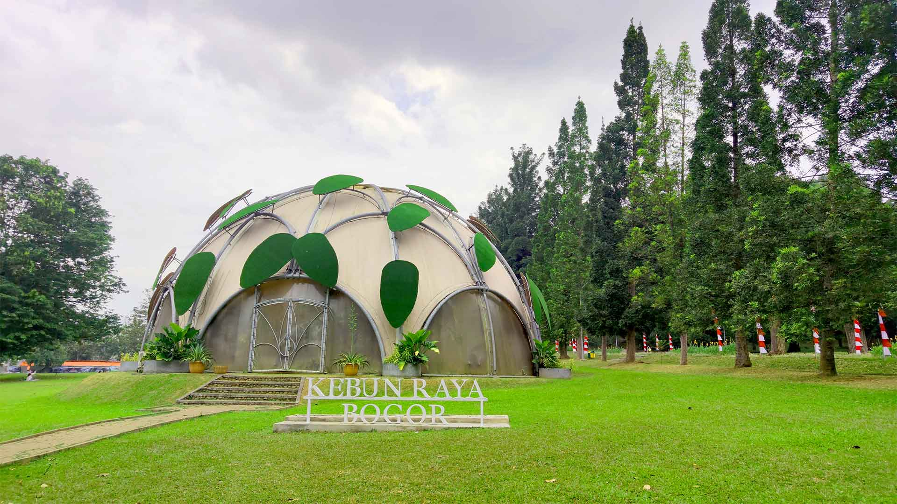

Sejarah
Pada mulanya kebun ini hanya akan digunakan sebagai kebun percobaan bagi tanaman perkebunan
yang
akan
diperkenalkan di Hindia Belanda. Namun pada perkembangannya pendirian Kebun Raya Bogor bisa
dikatakan mengawali perkembangan ilmu pengetahuan di Indonesia dan sebagai wadah bagi
ilmuwan
terutama bidang botani di Indonesia secara terorganisasi pada zaman itu (1880 - 1905). Dari
sini
lahir beberapa institusi ilmu pengetahuan lain, seperti Bibliotheca Bogoriensis (1842),
Herbarium
Bogoriense (1844), Kebun Raya Cibodas (1860), Laboratorium Treub (1884), dan Museum dan
Laboratorium
Zoologi (1894).
Geografis

Kebun Raya Bogor yang secara geografis terletak di antara 106°43’30”BT - 106°51’00”BT dan
30’30”LS – 6°41’00”LS serta mempunyai ketinggian rata-rata minimal 190 meter, maksimal 350
meter dan berada Kota Bogor, serta merupakan wilayah yang bercuaca tropis dan bercurah hujan
sangat tinggi
Taman Akuatik
Taman Akuatik adalah taman koleksi Kebun Raya Bogor yang berisi beragam tanaman berhabitat di
air, misalnya tumbuhan air tergenang, tumbuhan air mengapung, tumbuhan air terendam
sempurna, tumbuhan air campuran dan tumbuhan tepi air. Lingkungan kolam bukan berarti
memiliki struktur yang tidak nyaman, becek dan kotor. Di taman akuatik pengunjung akan
menemukan pemandangan kolam yang bersih, tertata rapi, sejuk dan indah. Selain itu dengan
adanya pohon besar di tengah-tengah taman, pengunjung dapat menikmati kerindangan pohon
tersebut.
Museum Zoologi

Selain memiliki berbagai koleksi tanaman dan suasananya yang natural, Kebun Raya Bogor juga
memiliki museum fauna, di dalamnya terdapat beberapa kerangka dan jenis binatang yang
diawetkan, diantaranya : burung, kepiting, serangga, ikan, dan lain sebagainya, Salahsatunya
adalah hewan mamalia terbesar di dunia yaitu Paus biru. Museum ini didirikan pada tahun 1894
yang digagasi oleh J. C. Koningsberger yaitu ahli Botani berkebangsaan Jerman yang merupakan
salahsatu tokoh perintis dan pengembang Kebun Raya Bogor pada masanya. J. C. Koningsberger
mengumpulkan beberapa koleksi museum sebagian besar berasal dari negara Indonesia, dan
sisanya berasal dari beberapa negara di dunia, salahsatunya yaitu jenis kepiting berukuran
besar yang berasal dari negara Jepang. Untuk bisa sampai ke museum zoologi, pengunjung bisa
menggunakan jalan yang berada di antara gedung Treub laboratorium dan guest house Nusa
indah, karena letaknya berada di belakang area kedua gedung tersebut.
Monumen Lady Raffles
Tugu Lady Raffles terletak tidak jauh dari pintu utara Kebun Raya Bogor. Bangunan tugu ini
memiliki denah lingkaran yang menyerupai sebuah gazebo atau bangunan terbuka dengan delapan buah
pilar yang mengelilinginya. Di bagian tengah terdapat tugu berbentuk persegi dengan ornamen
berbentuk cawan di atasnya. Pada tugu tersebut terdapat kata-kata puitis dalam bahasa Inggris
klasik yang merupakan hasil karya Olivia Madamne sendiri. Lady Raffles atau Olivia Mariamne
adalah istri dari Sir Thomas Stamford Raffles, Letnan Gubernur Inggris di Pulau Jawa (1811 –
1816). Tugu Lady Raffles dibangun oleh Sir Thomas Stamford Raffles untuk mengenang istrinya yang
meninggal pada tanggal 20 November 1814 di Bogor pada usia 43 tahun dikarenakan menderita
penyakit malaria. Olivia Mariamne memperkenalkan reformasi sosial kepada masyarakat Jawa saat
Raffles menjabat di Hindia Belanda.